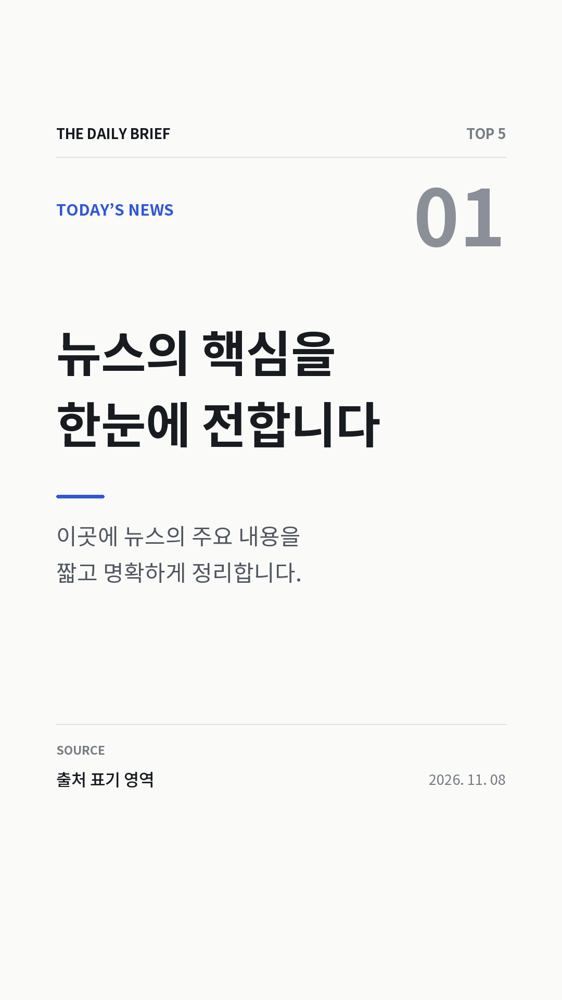

YOUR DAILY NEWS BRIEF
오늘을 읽는
가장 짧은 시간.
하루의 흐름을 바꾸는 다섯 가지 뉴스.
복잡한 세상, 핵심부터 차분하게 만나보세요.
생성한 오늘의 브리핑을 로컬에서 확인하세요.
맞춤 태그의 뉴스 수집은 아직 연결되지 않았어요.
맞춤 태그의 뉴스 수집은 아직 연결되지 않았어요.
TODAY'S BRIEFVOL. 01

영상 준비 중오늘의 뉴스 TOP 5영상을 확인하고 있어요.
CURATED FOR YOU
나의 브리핑.
관심 주제로 나만의 뉴스 브리핑을 준비해 보세요.
01 / MY INTERESTS
0 / 20관심 태그
주제나 종목 코드를 직접 입력해 등록하세요.
등록한 태그MY TAGS
아직 등록한 태그가 없어요.
관심 있는 주제를 추가해 보세요.
태그는 현재 브라우저에만 저장돼요.
02 / YOUR BRIEFING
연동 예정나만의 영상
등록한 태그에 맞는 뉴스 영상을 이곳에서 만나보세요.
아직 연결된 맞춤 영상이 없어요현재는 태그를 등록해도 영상이 생성되지 않아요.
뉴스 수집과 영상 생성 기능은 연동 전입니다.
뉴스 수집과 영상 생성 기능은 연동 전입니다.
디자인 시안 · 뉴스 수집 및 영상 생성 미연동